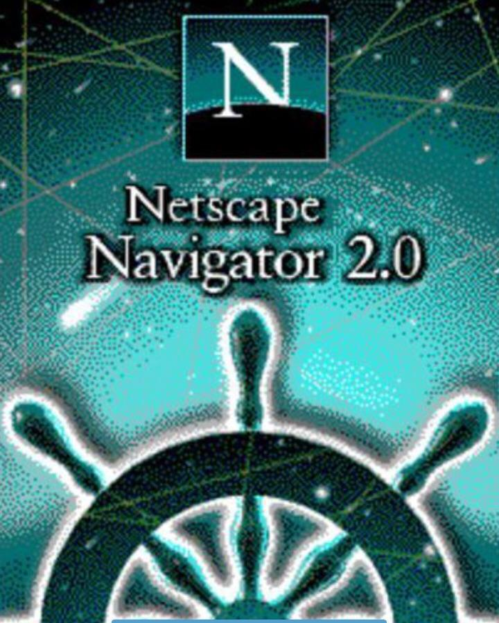
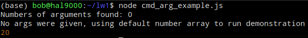
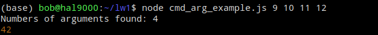
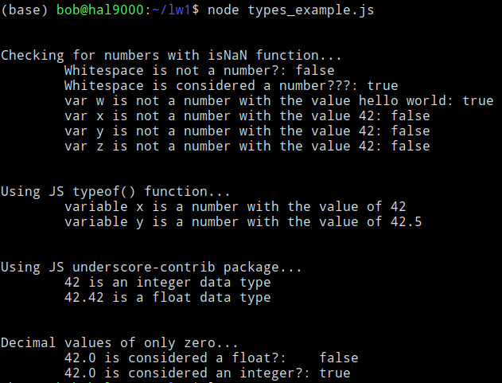

JavaScript
The Language of the Web
About
Introduction
JavaScript, often shortened to “JS” is a lightweight, interpreted, object-oriented language. It is best known as the scripting language used for client-side behavior on Web pages. Along with HTML and CSS, JavaScript is one of the core technologies of the World Wide Web andit is used on 97% of websites. All major web browsers include a built in JavaScript engine. While it is most commonly used for Web pages, JavaScript can be used in other environments like Node.js, Adobe Acrobat, and in frameworks like Electron to create native applications.
History
JavaScript was first released with Netscape Navigator in September 1995. Netscape management initially hired programmer Brendan Eich to embed the Scheme language into the browser. Shortly after however, they decided that he should create a new language with a syntax closer to Java than Scheme. According to Eich, he was able to create the first version of JavaScript in just 10 days. The name has caused confusion, with people often assuming it was a spinof of the then new and hot Java language, but it was likely just a marketing ploy to draw attention.
JavaScript has drawn plenty of criticism from the programming community, especially in its early days. Programmers have called out its slowness, lack of use outside of browsers, its reliance on heavy libraries, and its unpredictable type coercion. Its misuse has annoyed many users to say the least.
espite this sometimes-warranted reputation, JavaScript has continued to improve dramatically since its inception. Libraries like jQuery helped it to gain widespread popularity by making JavaScript's capabilities more powerful and accessable to prorammers by making things like document traversal, Asynchronous JavaScript and XML (AJAX), and event handling easier to use. Today, JavaScript is one of the most ubiquitous languages in the world, with brilliant computer scientists and newbie website operators alike contributing to its bright future. A massive community and support from the world's largest tech giants have brought about a rich software ecosystem with libraries ranging from ecommerce to data visualization, while modern front-end frameworks like React and Vue allow us to create powerful, complex, and secure web applications.
Features
// A JavaScript Object
{
"name": "Darth Vader",
"height": "202",
"mass": "136",
"hair_color": "none",
"skin_color": "white",
"eye_color": "yellow",
"birth_year": "41.9BBY",
"gender": "male",
"homeworld": "http://swapi.dev/api/planets/1/",
"films": [
"http://swapi.dev/api/films/1/",
"http://swapi.dev/api/films/2/",
"http://swapi.dev/api/films/3/",
"http://swapi.dev/api/films/6/"
],
"species": [],
"vehicles": [],
"starships": [
"http://swapi.dev/api/starships/13/"
],
"created": "2014-12-10T15:18:20.704000Z",
"edited": "2014-12-20T21:17:50.313000Z",
"url": "http://swapi.dev/api/people/4/"
}
JavaScript is Imperative and structured, making extensive use of familiar control flow features like if
statements, loops, and switch statements. It is both weakly and dynamically typed. Weak typing means some types
are implicitly cast depending on the context. For instance, the + operator can be used for both addition and concatenation.
let x = 2 + 2;
console.log(x);
4
let y = 2 + "2"
console.log(y);
"22"
JavaScript makes use of prototypes for object-orientation. Prototypes give inheritance to JavaScript objects. Objects in JS are very flexible when compared to other object-oriented languages in that they can modify both properties and methods.
Because Java is the language of the web, it is equipped with powerful features for sending and receiving data and information. JavaScript Object Notation (JSON) is data interchange format that uses human-readable text to store data objects with key/value pairs and arrays. Data can easily be transformed back and forth between the two using JSON.stringify() and JSON.parse(). In our example program, we will explore how to reach out to an external data source and manipulate the data in useful ways.
Specification
ECMAScript 2015 - Second major revision to JavaScript. Also known as ECMAScript6 and ES6. Introduced
major new and highly andticipated features including let and const keywords,
arrow functions, for/of loops, classes, promises, and many others.
Documentation
Resources
Examples
Reverse String Example
Here is a simple example of returning the backwords version of a string.
You can run this in a terminal, but you have to have Node JS installed. Put this code snipit into it's own
file, calling console.log(backwards(word)), then running node filename.js in the
terminal.
Promise Exmaple
Here is an example of using a Promise. We pass in two fucntions, one being a function to execute when the Promise returns true, and one to execute when the Promise returns false.
You can run this in a terminal the same way you would above. This example will output 11, but if you were to change the value of amount to 15, the output would be 25.
NodeJS Command Line Arguments Example
A quick rough example of setting up a javascript file to run in the terminal via NodeJS with user provided arguments.
Running cmd_arg_example.js without command-line arguments defaults to a built-in array integers

Running cmd_arg_example.js with command-line integer arguments

Expanded Types Example
Output from number type checking.

Vowel, Digit, Lowercase Checker
This program demonstrates how to determine if a value is odd or even
Odd or Even
This program checks to see how many digits, vowels, and lowercase letters are in a word
Party Mode
The header logo on this page is created with inline SVG which is an XML-based markup language for
displaying vector graphics. This format allows us to target specific elements of the SVG with JavaScript.
This example makes use of JavaScript's Math and Number objects and applies inline
styles to DOM elements using a setInterval function.
Smooth Scroll
The nav menu links on this page point to elements with corresponding IDs and have all been given a
.scroll class. When one of these links is clicked, the script calls a function to scroll from
the initial location on the page to the location of the target anchor.
Comparison to Other Languages
TypeScript
Overview
TypeScript is a superset of JavaScript. It is basically Javascript but with typing, objects, classes, interfaces, and is statically typed.
Compiling and Execution
Since all JavaScript is TypeScript, converting from JavaScript to TypeScript is super easy, you just change
the file extension from .js to .ts.
When a TypeScript program is compiled, it's code is written into the JavaScript equivalent. To execute a
TypeScript program,
you must first transpile it into JavaScript. You can do that in a terminal using the command
tsc filename.ts, then you run the JavaScript file it created
using the command node filename.js.
What Makes it Different
| Feature | JavaScript | TypeScript |
|---|---|---|
| Strongly Typed | No | Yes |
| Type of Language | Scripting | Object Oriented |
| Static Typing | No | Yes |
| Interfaces/Abstraction | No | Yes |
| Compilation | No | Yes |
| Portable | Yes | Yes |
| Use of JS Libraries | Yes | Yes |
Good resources on information on TypeScript:
- https://www.tutorialspoint.com/typescript/index.htm
- https://www.geeksforgeeks.org/difference-between-typescript-and-javascript/
Java
Overview
The naming would imply that Java and JavaScript are heavily related. However, the two are extremely different. For example, Java is strict with its data types, object-orientation supports static typing and abstractions/interfaces.
Compiling and Execution
JavaScript(JS) is typically more of a web based scripted language. which is not primarily
meant to only run on a local terminal. However, JS can be ran locally on the terminal with
the use of NodeJS. NodeJS requires only a single bash command in the terminal. For example...
$ node your_js_file.js
Some awesome output from your javascript file
Whereas Java is normally ran locally. Typically Java can be ran locally via a bash powered terminal. NodeJS
requires a single command in the terminal, whereas java requires two commands in the terminal.
For example...
$ javac your_java_file.java
$ java your_java_file
Some awesome output from your java file
What Makes it Different
| Feature | JavaScript | Java |
|---|---|---|
| Strongly Typed | No | Yes |
| Type of Language | Scripting | Object Oriented |
| Static Typing | No | Yes |
| Interfaces/Abstraction | No | Yes |
| Compilation | No | Yes |
Resources on information on Java:
Translators
- WebStorm
- Developed by JetBrains, Webstorm is a JavaScript IDE developed for easy use. The service does costs a yearly subscription similar to other services by JetBrains but if you're a student you qualify for free usuage of the tools while you're in school.
- Github JS-Interpreter
- Visual studio Code